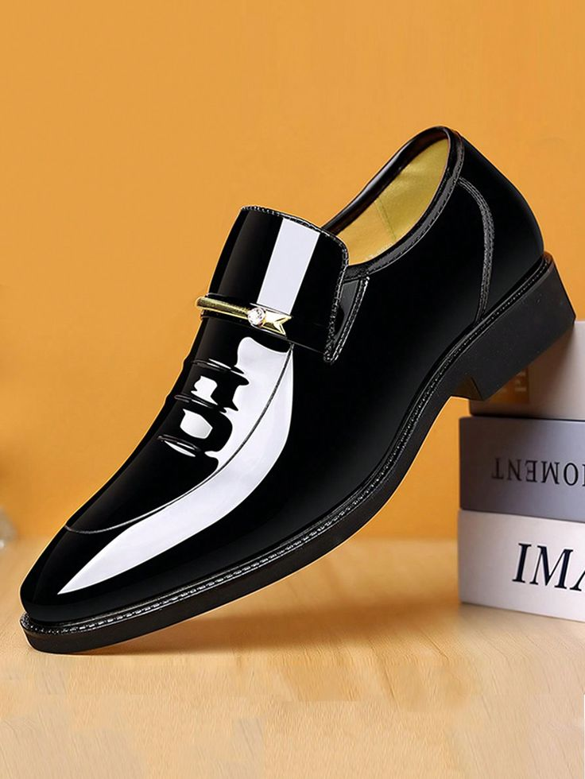
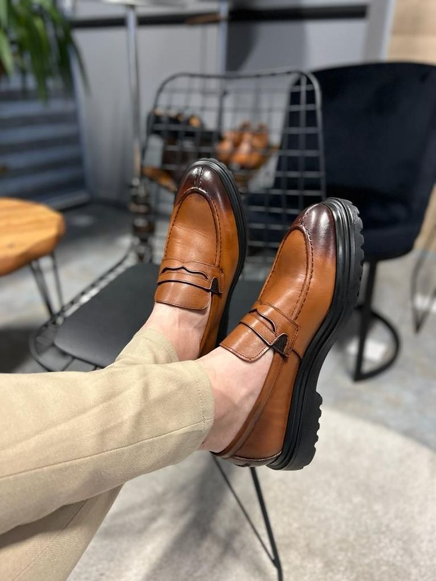

From wearing to styling: Elevate your look with Better Buy
By Better Buy style experts
Conventionally Classy

Classic black formal shoes pair effortlessly with any outfit. They add instant sophistication and belong in every man's wardrobe. A timeless essential that never goes out of style.
Slip Into Class

Slip-on formal shoes offer comfort and elegance. Their lace-free design fits both formal and semi-formal looks. Perfect for men who want ease without compromising style.
Welcome Tan

Tan shoes suit men who enjoy experimenting with modern style. They work well with suits, denim jackets, and smart-casual outfits. A refreshing choice to add depth to your wardrobe.